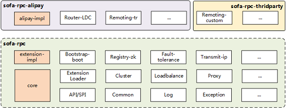
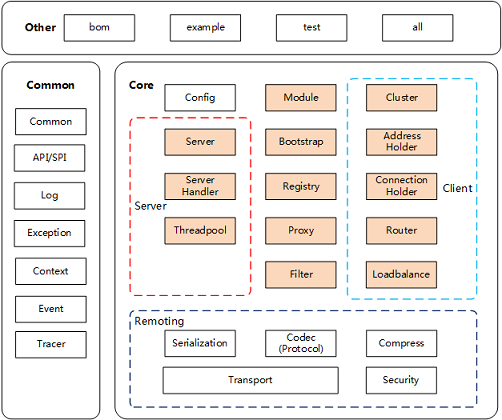

架构图
SOFARPC 从下到上分为两层：
- 核心层：包含了我们的 RPC 的核心组件（例如我们的各种接口、API、公共包）以及一些通用的实现（例如随机等负载均衡算法）。
- 功能实现层：所有的功能实现层的用户都是平等的，都是基于扩展机制实现的。

蚂蚁内部使用的版本也只是开源版本上增加一些内部扩展而已。
当然你也可以增加自己三方扩展，参见：扩展机制
模块划分
各个模块的实现类都只在自己模块中出现，一般不交叉依赖。需要交叉依赖的全部已经抽象到core或者common模块中。
目前模块划分如下:

主要模块及其依赖如下：
| 模块名 | 子模块名 | 中文名 | 说明 | 依赖 |
|---|---|---|---|---|
| all | 发布打包模块 | 需要打包的全部模块 | ||
| bom | 依赖管控模块 | 依赖版本管控 | 无 | |
| example | 示例模块 | all | ||
| test | 测试模块 | 包含集成测试 | all | |
| core | api | API模块 | 各种基本流程接口、消息、上下文、扩展接口等 | common |
| core | common | 公共模块 | utils、数据结构 | exception |
| core | exception | 异常模块 | 各种异常接口等 | common |
| bootstrap | 启动实现模块 | 启动类，发布或者引用服务逻辑、以及registry的操作 | core | |
| proxy | 代理实现模块 | 接口实现代理生成 | core | |
| client | 客户端实现模块 | 发送请求、接收响应、连接维护、路由、负载均衡、同步异步等 | core | |
| server | 服务端实现模块 | 启动监听、接收请求，发送响应、业务线程分发等 | core | |
| filter | 拦截器实现模块 | 服务端和客户端的各种拦截器实现 | core | |
| codec | 编解码实现模块 | 例如压缩，序列化等 | core | |
| protocol | 协议实现模块 | 协议的包装处理、协商 | core | |
| transport | 网络传输实现模块 | TCP连接的建立，数据分包粘包处理，请求响应对象分发等 | core | |
| registry | 注册中心实现模块 | 实现注册中心，例如zk等 | core |